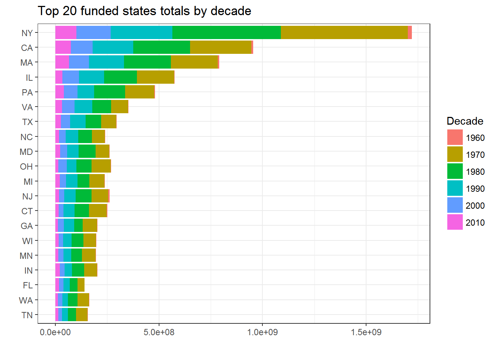

Exploring the data
library(tidyverse)
library(jsonlite)
library(forcats)
library(ggmap)
library(broom)
library(noncensus)
library(blscrapeR)
data("states")
theme_set(theme_bw())Definitions
In defining the funding analyze, we learn from the NEH Grants Data Dictionary that there are five different dollar amounts included in the grants dataset:
- ApprovedOutright: Approved amount (outright funds). (Outright funds are not contingent on additional fundraising.)
- ApprovedMatching: Approved amount (matching funds). (Federal matching funds require a grantee to secure gift funds from third parties before federal funds are awarded. Except for Challenge Grants, NEH matching awards are made on a one-to-one basis.)
- AwardOutright: Amount actually awarded (outright funds).
- AwardMatching: Amount actually awarded (matching funds).
- OriginalAmount: Original amount of grant (minus any grant supplements).
We will define the relevant funding value as the sum of ApprovedOutright and ApprovedMatching. Furthermore, we will adjust funding dollars into 2016 dollars.
adj <- inflation_adjust(2017) %>%
data_frame(YearAwarded = seq_along(.) + 1946, Adj = .)Number of grants awarded over time
Funding trends can be broken into three periods:
- initial increase over 1965-1979;
- step down over 1980-1995;
- further step down over 1996-2016
grants %>%
group_by(YearAwarded) %>%
count %>%
ggplot(aes(x=YearAwarded, y=n)) +
geom_point() +
geom_line() +
scale_x_continuous(breaks=seq(1960,2017,by=5)) +
geom_vline(xintercept=1979, colour="red", linetype="longdash") +
geom_vline(xintercept=1995, colour="red", linetype="longdash")
Amount awarded over time
Aggregating all the funding approved per year, it would seem as many dollars were distributed in 2016 as there were in 1980.
grants %>%
filter(YearAwarded < 2017) %>%
mutate(Funding = ApprovedOutright + ApprovedMatching) %>%
group_by(YearAwarded) %>%
summarise(Funding = sum(Funding)) %>%
ggplot(aes(x=YearAwarded, y=Funding)) +
geom_point() +
geom_line()Being that we know that the number of grants has declined over time while little change is apparent in total funding, has the average amount of funding per project increased over this period? The following does seem to suggest so.
grants %>%
group_by(YearAwarded) %>%
summarise(AvgFundingPerProject = sum(AwardOutright) / n()) %>%
ggplot(aes(x=YearAwarded, y=AvgFundingPerProject)) +
geom_point() +
geom_line()
But that assumes that the dollar amounts in these two years are equivalent, but that ignores inflation. The change in amounts of funding approved over time is very different if the dollar amounts are adjusted for inflation. Instead of there being little change over the past 30 years, there is a readily apparent decline in funding, with 2016 being roughly one-third of the level of funding in 1980.
grants %>%
mutate(Funding = ApprovedOutright + ApprovedMatching) %>%
select(YearAwarded, Funding) %>%
left_join(adj) %>%
mutate(Funding_2017_Adj = Funding / Adj) %>%
group_by(YearAwarded) %>%
summarise(Funding_Unadjusted = sum(Funding),
Funding_Adjusted = sum(Funding_2017_Adj)) %>%
gather(Type, Amount, -YearAwarded) %>%
ggplot(aes(x=YearAwarded, y=Amount, colour=Type)) +
geom_point() +
geom_line()## Joining, by = "YearAwarded"
For the remaining analyses over time, we will use the inflation adjusted dollars.
Funding for different divisions over time
grants %>%
mutate(Funding = ApprovedOutright + ApprovedMatching) %>%
select(YearAwarded, Division, Funding) %>%
left_join(adj) %>%
mutate(Funding = Funding / Adj) %>%
group_by(YearAwarded, Division) %>%
summarise(Funding = sum(Funding)) %>%
ggplot(aes(x=YearAwarded, y=Funding, fill=fct_reorder(Division, -Funding))) +
geom_bar(stat='identity') +
scale_fill_discrete(name='Division') ## Joining, by = "YearAwarded"
Total funding by state and decade
grants %>%
filter(InstState %in% state.abb) %>%
mutate(Funding = ApprovedOutright + ApprovedMatching,
Decade = as.factor(YearAwarded - (YearAwarded %% 10))) %>%
left_join(adj) %>%
mutate(Funding = Funding / Adj) %>%
select(Decade, InstState, Funding) %>%
group_by(InstState, Decade) %>%
summarise(Funding = sum(Funding)) %>%
ggplot(aes(fct_reorder(InstState, -Funding), Funding, fill=Decade)) +
geom_bar(stat='identity') +
scale_fill_discrete(name='Decade') +
coord_flip()## Joining, by = "YearAwarded"